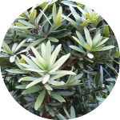

Podocarpus latifolius
Broad-leaf Yellowwood
National Tree Number: 18
Family Podocarpaceae
Alternativlly called: Real Yellowwood, Broad-leaf Yellowwood.
Afrikaans: Opregte-geelhout, Xhosa/Zulu: Umgeya or Umkhoba.
This straight-stemmed tree is evergreen and grows up to 30m high with a 3m trunk diameter, and thick, narrow, dark green leaves. The bark is vertically fissured. This magnificant tree has been declared the national tree of South Africa and
is protected here.

Sourced from:
- Richard Boon. 2010. Pooley's Trees Of Eastern South Africa (2nd edition)
- Wikipedia